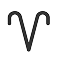
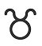

Оглавление
Предисловие
Вы стоите на пороге мира, где реальность переплетается с фантазией, а прошлое шепчет свои истории тем, кто умеет слушать. Здесь каждая страница — это ключ к дверям, которые лучше не открывать… или все же стоит? Эта книга — собрание тайн, окутанных мраком веков, легенд, рожденных в глубинах человеческой души, и загадок, которые, возможно, вы сможете разгадать. Но будьте осторожны: однажды начав читать, вы рискуете потерять счет времени и оказаться во власти этих строк. Позвольте словам вести вас. Пролистайте первую страницу — и узнайте, что скрывается за завесой тайн…
Оккультизм
Оккультизм — это учение о скрытых силах и знаниях, недоступных обычному восприятию, включая магию, алхимию, астрологию и эзотерику. Это путь постижения тайн Вселенной за пределами известной реальности.

Направления

Астрология
Астрология — это древнее учение о связях между движением небесных тел и судьбами людей. Каждая звезда, планета и знак Зодиака хранят уникальный код, раскрывающий тайны характера, будущего и предназначения. Она помогает понять себя, окружающий мир и вдохновляет на осознанные решения, а также учит видеть взаимосвязь между космосом и нашей жизнью.
История
возникновения
Астрология зародилась в древности, когда люди впервые заметили связь между движением светил и событиями на Земле. Вавилонские жрецы первыми начали расшифровывать "послания богов", разделив небо на 12 знаков зодиака. Греки превратили эти знания в науку, добавив математику и философию, а Птолемей закрепил их в своём труде "Тетрабиблос". На Востоке астрология обрела мистический оттенок: в Индии она слилась с учением о карме, а в Китае — с гармонией стихий. Средневековье сделало её уделом алхимиков и королей, но с приходом научного века она отступила в тень.
Знаки Зодиака
Знак зодиака — это созвездие, через которое проходит Солнце в момент рождения человека. Каждый знак связан с определённым периодом года и символизирует уникальную энергию, влияющую на характер, поведение и судьбу человека.
Всего существует 12 знаков зодиака, которые делятся на стихии:

Знаки Зодиака
Стихия огонь
Огонь — стихия энергии, движения и творчества. Это источник энтузиазма, уверенности и решимости. Люди огненной стихии — прирождённые лидеры, всегда готовые к вызовам. Их внутренний огонь способен зажечь других, но иногда может выгореть сам, если его не контролировать.
Стихия земля
Земля символизирует стабильность, практичность и материальность. Это стихия, которая прочно стоит на земле, ценит реальные достижения и долгосрочные результаты. Люди земной стихии — трудолюбивые строители, которые создают прочный фундамент для своей жизни.
12 знаков зодиака
Овен
21 марта-19 апреля
Близнецы
21 мая - 21 июня
Лев
23 июля - 22 августа
Телец
20 апреля - 20 мая
Рак
22 июня - 22 июля
Дева
23 августа - 22 сентября
Знаки Зодиака
Весы
23 сентября - 23 октября
Скорпион
24 октября - 21 ноября
Стрелец
22 ноября - 21 декабря
Козерог
22 декабря - 20 января
Водолей
21 января - 18 февраля
Рыбы
19 февраля - 20 марта
Овен
21 марта-19 апреля
Овны — это страсть, энергия и решимость. Они обладают взрывным характером, не терпят ограничений и всегда действуют быстро, чтобы достичь своих целей. Однако их эгоцентричность и импульсивность могут мешать партнерству и компромиссам.
Овен
Телец
20 апреля - 20 мая
Тельцы — это знак надёжности, практичности и любви к прекрасному. Они умеют бережно относиться к финансам и имуществу, строят прочный фундамент для будущего и ценят комфорт, красоту и традиции. Однако их приверженность стабильности иногда проявляется в упрямстве и нежелании идти на компромиссы.
Овен
Близнецы
21 мая - 21 июня
Близнецы — это знак коммуникации и любознательности. Они обладают острым умом, даром убеждения и всегда в курсе новостей. Близнецы стремятся к переменам, избегая рутины, но их непоседливость иногда мешает сосредоточиться.
Близнецы
Рак
22 июня -22 июля
Раки — это знак глубоких эмоций, привязанности и интуиции. Их часто считают меланхоличными и сильно связанными с семьёй, что делает их верными защитниками близких. При этом их настроение может меняться от тёплого дружелюбия к замкнутости, а недоверие иногда мешает лёгкому общению.
Рак
Лев
23 июля - 22 августа
Львы источают позитив и жизнелюбие, отличаются эгоцентризмом и желанием быть всегда быть на первых ролях. Вместе с тем в астрологической характеристике уделяется большое внимание таким качествам Львов, как щедрость и душевность.
Лев
Дева
23 августа - 22 сентября
Девы — это знак трудолюбия, внимания к деталям и аналитического подхода. Они предлагают практичные решения, ценят порядок и стабильность, но их критичность и стремление к совершенству иногда могут создавать давление как на себя, так и на окружающих.
Дева
Весы
23 сентября - 23 октября
Весы — это знак гармонии, обаяния и стремления к партнерству. Они легко вписываются в общество, ценят баланс, красоту и справедливость, но их постоянный поиск одобрения окружающих может стать причиной внутренней неуверенности.
Весы

Скорпион
23 октября — 22 ноября
Скорпионы — это знак глубины, страсти и противоречий. Их отличает сильная эмоциональность, чувственность и скрытность. Они ценят искренность, помнят хорошее, но долго не прощают обиды, что усиливает их внутреннюю напряжённость.
Скорпион
Стрелец
23 ноября - 22 декабря
Стрельцы — это знак независимости, жажды знаний и свободы. Их описывают как странников, не склонных к привязкам, но всегда стремящихся к новым горизонтам. Стрельцов легко задеть, но благодаря своей жизнерадостности и любви к приключениям они редко зацикливаются на обидах и смотрят вперёд с оптимизмом.
Стрелец
Козерог
22 декабря - 19 января
Козероги — это знак трудолюбия, дисциплины и ответственности. Им важны точность, порядок и структура во всём, что они делают. Строгие к себе и окружающим, они часто кажутся собранными и серьёзными, но их сосредоточенность на целях может восприниматься как холодность или отстранённость.
Козерог
Водолей
20 января - 19 февраля
Водолеи — это знак фантазии, интеллекта и идеализма. Они легко создают и продвигают новые идеи, проявляя упрямство в отстаивании своих взглядов, даже если понимают их слабость. Наблюдательные и заботливые, Водолеи любят анализировать окружающих, стремясь сделать мир лучше своими нестандартными подходами.
Водолей
Рыбы
19 февраля - 20 марта
Рыбы — это знак романтики, творчества и интуиции. Они обладают богатым воображением, готовы бескорыстно поддерживать близких и чувствительно реагируют на чужие эмоции. Однако их уязвимость кроется в склонности к саморазрушению, которую преодолеть бывает непросто, несмотря на их внутреннюю силу.
Рыбы
Ведьмовство
Ведьмовство — это древнее искусство взаимодействия с природой, энергиями и скрытыми силами Вселенной. Это не просто мифы и легенды, а целая система знаний, передаваемая через поколения. Ведьмы — хранительницы тайн, которые умеют читать знаки судьбы, создавать зелья, заряжать предметы силой и общаться с духами природы.
История
возникновения
Происхождение ведьмовства связано с древними представлениями о женщинах, обладающих особыми знаниями и умениями. Ведьмой называли тех, кто владел искусством магии, понимал лечебные свойства трав и умел взаимодействовать с невидимыми силами природы. Такие женщины нередко служили знахарями, предсказателями и хранителями древних традиций. Однако их деятельность зачастую оставалась скрытой, поскольку общество испытывало страх перед неизвестностью и опасалось влияния сверхъестественных сил. Передаваемые знания сохранялись в семьях и общинах устно, сохраняя свою таинственность и притягательность на протяжении веков.
Виды ведьм
Хедж-ведьма
Садовая колдунья, использует в своем искусстве растения и все, что находится вне дома. Имеет глубокую связь с природой и энергиями природного мира, и большинство из них развивают свои собственные особенности в течение длительного времени, проведенного в лесу, работая с разными растениями и травами.
Виды ведьм
Кухонная ведьма
Таких ведьм называют домашними колдуньями — они проводят большую часть времени дома, используя в своих практиках эфирные масла, травы, продукты и предметы быта. Часто они прекрасно готовят, экспериментируют с пищей и считаются создательницами первых магических зелий. У них всегда есть сад с травами, а их характер отличается заботливостью и добротой.
Виды ведьм
Морская или водная ведьма
Водные ведьмы связаны с океанами, реками и озерами, отзываясь на энергии, как вода: добром на добро, агрессией на агрессию. Они уравновешены, справедливы и черпают силу из воды и луны. Их магия направлена на исцеление, очищение и восстановление гармонии, часто используя ракушки, кристаллы и водные символы в ритуалах.
Виды ведьм
Зеленая ведьма
Зелёные ведьмы ориентированы на природу, используя натуральные материалы и её энергию. Они разбираются в садоводстве, фитотерапии и защите дикой природы, стремясь к экологичному образу жизни. Селясь в лесах, они черпают силу из окружающей среды для усиления магических обрядов. Зелёная ведьма часто практикует в одиночку, специализируясь на исцелении, защите и благословениях.
Алтарь ведьм
Алтарь ведьм — это священное пространство, используемое для магических ритуалов, медитаций и работы с энергией. Он служит центром силы, где размещаются символические предметы
Алтарь ведьм
Типичный колдовской алтарь оснащается некоторым набором инструментов, воплощающих те силы и стихии
Водная стихия: кубки и чаши
Земная стихия: камни и кристаллы
Воздушная стихия: курительницы, ароматические палочки или птичьи перышки
Огненая стихия: свечи
Также в алтарях используются: фигурки божеств-покровителей, алтарные пентакли, покрывала,
Сатанизм
Сатанизм — это философия, культ или мировоззрение, которое часто ассоциируется с противостоянием традиционным религиям. Однако его истинная сущность гораздо сложнее, чем кажется на первый взгляд. Для одних это путь к свободе мышления и отказ от догм, для других — изучение темных сторон человеческой души и природы.
История
возникновения
Истоки сатанизма восходят к древним религиям, где почитались жестокие божества. Образ Сатаны сформировался в иудаизме под влиянием халдейских, вавилонских и египетских культов и был унаследован христианством. Многие доиудейские боги, такие как Вельзевул или Астарот, стали ассоциироваться с дьяволом. Приверженцы старых верований считались «сатанистами». В Библии около 200 упоминаний противников Бога. Открытая практика сатанизма началась в XX веке: в 1948 году в Огайо был основан «Ковен Богоматери Эндорской», а в 1966 году — Церковь сатаны в США.
Направления
Храм Сатаны
Храм Сатаны — организация, которая может не соответствовать представлениям о сатанизме. Она пропагандирует доброжелательность, сочувствие, здравый смысл и справедливость. Её члены, как и последователи Антона ЛаВея, видят в Сатане символ борьбы против тирании, а не библейского образа. Они считают свою религию основанной на науке и критическом мышлении, а не суевериях. Известность Храму принесли противостояние общине Уэстборо и установка статуи Бафомета в Детройте.
Храм Сатаны
Направления
Основанный на христианстве дуотеизм
Христианский дуотеизм является небольшим течением теистического сатанизма. Эта форма сатанизма признает, что что христианская теология является правдой, а также что до сих пор продолжается война между Богом и Сатаной. Основным отличием является то, что это течение сатанистов поклоняются дьяволу, а не Богу. Они считают, что Бог и Сатана являются двумя наиболее мощными существами во Вселенной и что Сатана имеет достаточно сил, чтобы в конечном итоге осилить Бога и выиграть извечную войну.
Дуотеизм
Направления
Люциферианство
Люцифериане схожи с сатанистами ЛаВея: большинство из них нерелигиозны и воспринимают Люцифера как символ. "11 точек Силы" Церкви Люцифера подчёркивают ценности самоопределения и освобождения от "рабского менталитета". Люциферианство — это скорее философия, чем религия. Церковь Люцифера ставит целью помочь людям взять ответственность за свою жизнь и раскрыть свой потенциал. Главное различие между люциферианами и сатанистами в том, что Люцифер символизирует знания, а Сатана — оппозицию и похоть.
Люциферианство
Направления
Демонолатрия
Демонолатрия переводится как "поклонение демонам", однако современные практики далеки от буквального понимания. Вместо поклонения демонам их рассматривают как силы или энергии, которые можно призвать для помощи в ритуалах и магических практиках. Традиционные демонолаторы, напротив, почитают демонов как олицетворение определённых качеств и атрибутов. Каждый демонолатор выбирает себе божество-покровителя, среди которых может быть, например, Сатана, связанный с элементом огня.
Демонолатрия

Символика
Символика
Символика
Пентаграмма
Пентаграмма
В сатанизме перевёрнутая пентаграмма символизирует преисподнюю, хаос и разрушение. Это значение было предложено французским оккультистом Элифасом Леви в его книге «Учение и ритуал высшей магии». Он считал, что пентаграмма с одним концом вверх олицетворяет Христа, а перевёрнутая — символизирует Сатану. В XX веке Антон Ла-Вей, основатель Церкви Сатаны, вдохновлённый трудами Леви, сделал перевёрнутую пентаграмму с изображением козлиной головы ключевым символом своего учения.
Символика
Бафомет
Бафомет
Символ Бафомета имеет множество значений. Он олицетворяет союз противоположностей, таких как мужское и женское начала, свет и тьма, а также единство дуального мира. Козлиная форма символизирует мудрость, знание и связь с природной силой. Факел, который он держит, представляет свет истины, ведущий к просвещению, а змеи, обвивающие его рога, символизируют духовную трансформацию и постоянное обновление.
Символика
Перевернутый крест
Перевернутый
крест
В сатанизме перевёрнутый крест символизирует восстание против традиционных христианских устоев и может быть связан с поклонением Сатане. Этот символ также олицетворяет гордыню и непокорность. Сатанисты используют перевёрнутый крест как выражение отказа от общепринятых религиозных норм, морали и авторитетов, подчёркивая свою приверженность индивидуализму, гедонизму и освоению тёмных сторон человеческой природы.
Символика
Козел
Козел
Козлы традиционно связаны с сатанинскими верованиями, олицетворяя либо самого тёмного владыку, либо его фамильяра. Этот символ, практически не изменившись за века, остаётся одним из самых узнаваемых атрибутов дьявола и широко используется в современных сатанинских религиях. Козлиные головы можно увидеть в логотипах Церкви Сатаны и Сатанинского Храма, а также в образе Бафомета. Возможно, именно поэтому козлы часто воспринимаются как жуткие или демонические образы, что подчёркивается
Статьи
Статьи о Западной магии и оккультизме
https://teurgia.org/Астрология и гороскопы
https://yogajournal.ru/conscious/astrology/История сатанизма
https://postnauka.org/faq/58450Эзотерика и Оккультизм
www.esoteric.su